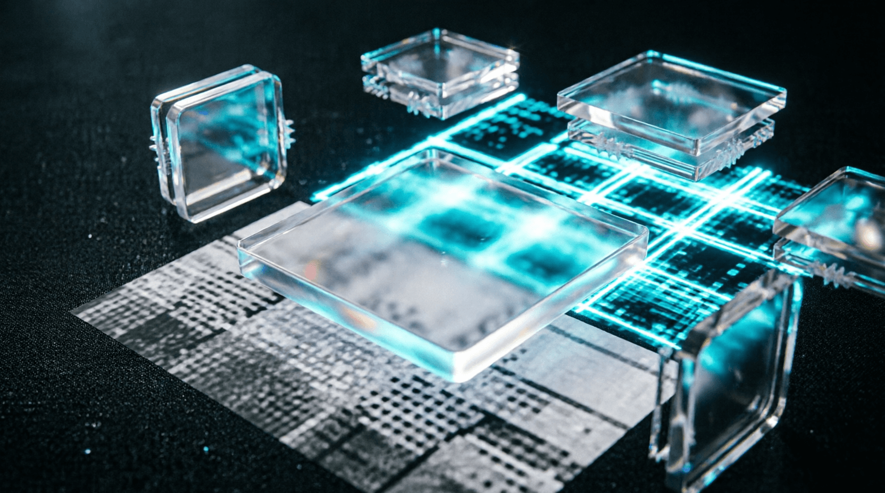

Урок 10: Пайплайны данных и кастомные Датасеты
ML-инженер • Архитектура нейросетей с нуля
Даже самая совершенная архитектура нейросети бесполезна, если видеокарта простаивает в ожидании данных. Процесс подготовки батчей на CPU часто становится главным узким местом (bottleneck) обучения. На этом уроке мы разберем, как писать быстрые, асинхронные пайплайны данных, и как правильно упаковывать последовательности разной длины для рекуррентных сетей.
Dataset отвечает за то, как загрузить и обработать один конкретный пример по его индексу. Класс DataLoader отвечает за стратегию: как объединить эти примеры в батч, перемешать их, распараллелить загрузку на несколько ядер процессора и передать в VRAM.
Для создания своего датасета необходимо унаследоваться от абстрактного класса torch.utils.data.Dataset и строго переопределить три метода: __init__ (инициализация путей, загрузка метаданных), __len__ (возвращает общий размер датасета) и __getitem__ (логика чтения файла с диска, аугментация и приведение к тензору).
import torch
from torch.utils.data import Dataset, DataLoader
class CustomTextDataset(Dataset):
def __init__(self, texts, labels):
# Храним данные (в реальном коде здесь могут быть пути к файлам картинок/аудио)
self.texts = texts
self.labels = labels
def __len__(self):
return len(self.texts)
def __getitem__(self, idx):
# Извлекаем сырые данные
raw_text = self.texts[idx]
label = self.labels[idx]
# Пример простейшей обработки текста: разбиение на токены и замена на фиктивные ID
# В Production здесь вызывается токенизатор или трансформация картинок (albumentations)
tokens = [len(word) for word in raw_text.split()]
token_tensor = torch.tensor(tokens, dtype=torch.long)
label_tensor = torch.tensor(label, dtype=torch.long)
return token_tensor, label_tensorСтандартный DataLoader пытается объединить тензоры с помощью torch.stack. Если один текст состоит из 5 слов, а второй из 10, операция упадет с ошибкой размерностей. Чтобы решить это, используется кастомная функция сборки батча — collate_fn. Она дополняет короткие последовательности специальными токенами заполнения (Padding) до длины самого длинного элемента в текущем батче.
from torch.nn.utils.rnn import pad_sequence
def custom_collate_fn(batch):
# batch — это список кортежей, которые вернул __getitem__: [(tensor_1, label_1), (tensor_2, label_2), ...]
features = [item[0] for item in batch]
labels = [item[1] for item in batch]
# pad_sequence автоматически выравнивает тензоры, заполняя пустоты нулями (padding value = 0)
# batch_first=True задает форму [Batch_Size, Max_Sequence_Length]
features_padded = pad_sequence(features, batch_first=True, padding_value=0)
labels_tensor = torch.stack(labels)
return features_padded, labels_tensornum_workers=0, загрузка данных идет в том же главном потоке, что и вычисления нейросети. Пока процессор читает картинку с диска, дорогостоящая GPU простаивает без дела.
Параметры для максимальной производительности в Production:
num_workers: Количество параллельных процессов CPU для подготовки данных. Золотая середина — число ядер вашего процессора (или количество GPU × 4).pin_memory=True: Резервирует батчи в специальной «привязанной» оперативной памяти, что значительно ускоряет копирование тензоров с CPU на GPU через шину PCIe.# Сборка финального пайплайна
raw_data = ["Глубокое обучение это весело", "ML инженер создает архитектуры", "Тензоры"]
raw_labels = [1, 1, 0]
dataset = CustomTextDataset(raw_data, raw_labels)
dataloader = DataLoader(
dataset,
batch_size=2,
shuffle=True,
num_workers=2, # Распараллеливание на 2 ядра CPU
pin_memory=True, # Ускорение передачи на GPU
collate_fn=custom_collate_fn # Кастомная сборка батча с паддингом
)
for x_batch, y_batch in dataloader:
print("Форма батча признаков (с паддингом):", x_batch.shape)
print("Батч таргетов:", y_batch)Модифицируйте функцию custom_collate_fn. Помимо возвращения дополненного тензора features_padded, она должна генерировать и возвращать бинарную маску внимания (Attention Mask) той же формы. Маска должна содержать 1 там, где находятся реальные данные, и 0 там, где был применен Padding. Такие маски критически важны для того, чтобы современные трансформеры не тратили вычислительные ресурсы на обработку пустых нулевых токенов.
import torch
from torch.nn.utils.rnn import pad_sequence
def custom_collate_fn_with_mask(batch):
features = [item[0] for item in batch]
labels = [item[1] for item in batch]
# 1. Выравниваем последовательности паддингом (padding_value=0)
features_padded = pad_sequence(features, batch_first=True, padding_value=0)
labels_tensor = torch.stack(labels)
# 2. Генерируем Attention Mask
# ВАШ КОД ЗДЕСЬ: создайте тензор той же формы, где 1 - реальные данные, 0 - паддинг
return features_padded, labels_tensor, attention_maskimport torch
from torch.nn.utils.rnn import pad_sequence
def custom_collate_fn_with_mask(batch):
features = [item[0] for item in batch]
labels = [item[1] for item in batch]
# 1. Выравниваем последовательности паддингом (padding_value=0)
features_padded = pad_sequence(features, batch_first=True, padding_value=0)
labels_tensor = torch.stack(labels)
# 2. Генерируем Attention Mask
# Так как паддинг заполнен нулями, маска = 1 везде, где тензор != 0
attention_mask = (features_padded != 0).long()
return features_padded, labels_tensor, attention_mask
# Пример использования:
# mask будет иметь вид: [[1, 1, 1, 0, 0], [1, 1, 1, 1, 1]]При обработке текста или аудио мы вынуждены дополнять короткие примеры нулями до длины самого длинного в батче. Для нейросети эти нули — просто числа. Если не сообщить модели, где данные закончились, она начнет:
Приложение бесплатное. Было и останется.
Если проект помог вам или вашим близким — можете поддержать разработку добровольным переводом.
❤️ Спасибо за поддержку!
Перейти в каталог
